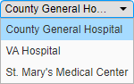
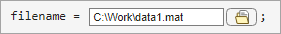
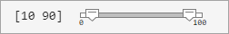
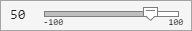
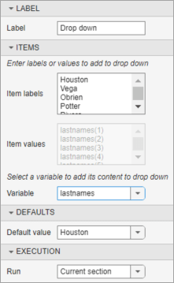
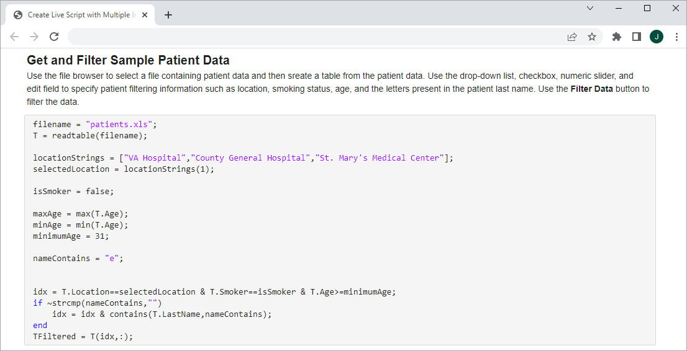

Add Interactive Controls to a Live Script
You can add sliders, spinners, drop-down lists, check boxes, edit fields, buttons, file browsers, color pickers, and date pickers to your live scripts to control variable values interactively. Adding interactive controls to a script is useful when you want to share the script with others. Use interactive controls to set and change the values of variables in your live script using familiar user interface components.
Insert Controls
To insert a control into a live script, go to the Live Editor tab, and in the Code section, click Control. Then, select from the available options. To replace an existing value with a control, select the value in the live script and then insert the control. The Control menu shows only the options available for the selected value. To configure the control, right-click the control in the live script and then select Configure Control.
If your live script already contains a control, in some cases, you can replace
that control with another control that has similar functionality. To replace a
control with another control, right-click it and select Replace with
Control Name. You also can select
the control in the live script, go to the Live Editor tab,
click Control, and select from the available options. Replacing
one control with another preserves relevant configuration values, such as range and
default values.
This table shows the full list of controls.
| Control | Description | Configuration Details |
|---|---|---|
Button
| Use a button control to interactively run code upon button click. | To change the text displayed on the button, in the Label section, enter the label text. |
Check Box
| Use a check box to interactively set the value of a
variable to either the logical value The displayed state of the check box (checked or not checked) determines its current value. | Not applicable |
Color Picker (since R2023b)
| Use a color picker to interactively select a color. The color displayed in the color picker is its current selected color. | In the Format section, select from the available options to specify the format of colors in the color picker. Valid formats include:
|
Date Picker (since R2024a)
| Use a date picker to interactively select a date. The date displayed in the date picker is its current selected date. | In the Format section, select from the available options to specify the format of dates in the date picker. |
Drop-Down List

| Use a drop-down list to interactively change the value of a variable by selecting from a list of items. Hover over any item displayed in the drop-down list to see its value. | In the Items > Item labels field, specify the text that you want to display for each item in the drop-down list. In the Items > Item values field, specify the values for each item in the drop-down list. Make sure to enclose text values in single or double quotes because the Live Editor interprets each item in the list as code. You also can populate the items in the drop-down list using values stored in a variable. For more information, see Link Variables to Controls. |
Edit Field
| Use an edit field to interactively set the value of a variable to any typed input. The text displayed in the edit field and the configured data type determines its current value. | In the Type section, in the Data type field, select from the available options to specify the data type of the text in the edit field. |
File Browser (since R2023a)

| Use a file browser to interactively select a file by opening a file selection dialog box or a folder by opening a folder selection dialog box. The text displayed in the edit field determines its current value. | In the Type section, select File to use the file browser to select a file, or Folder to use the file browser to select a folder. To display text next to the Select File button, in the Label section, enter the label text. |
Range Slider (since R2024b)

| Use a range slider to interactively select a range by moving the left and right range slider thumbs to the desired minimum and maximum range values. The value to the left of the range slider is its current value. | In the Values section, specify a Min, Max, and Step value or select a workspace variable from the drop-down list. For more information about specifying the range slider values using variables, see Link Variables to Controls. |
Slider

| Use a slider to interactively change the value of a variable by moving the slider thumb to the desired numeric value. The value to the left of the slider is its current value. | In the Values section, specify a Min, Max, and Step value or select a workspace variable from the drop-down list. For more information about specifying the slider values using variables, see Link Variables to Controls. |
Spinner
| Use a spinner to interactively increment or decrement the value of a variable by clicking the up and down arrow buttons to the right of the value. You also can enter a numeric value for the spinner in the numeric edit field. The value in the numeric edit field is the current value of the spinner. | In the Values section, specify a Min, Max, and Step value or select a workspace variable from the drop-down list. For more information about specifying the spinner values using variables, see Link Variables to Controls. |
State Button (since R2023b)
| Use a state button to interactively set the value of a logical variable by clicking the button on or off. The displayed state of the state button (pressed or not pressed) determines its current value. | To change the text displayed on the state button, in the Label section, enter the label text. |
Modify Control Labels
You can hide the code in a live script and display only formatted text, labeled controls, tasks, and output. Hiding the code is useful when sharing and exporting live scripts. To hide the code, click the Hide code button to the right of the live script. You also can go to the View tab, and in the View section, click Hide Code. To show the code again, click the Output inline button or the Output on right button .
When the code is hidden, labels display next to the control. To modify the label for a control, right-click the control and select Configure Control. Then, in the Label section, enter the label text. The label text is also the text that displays on button controls in all views. Press Tab or Enter, or click outside of the control configuration menu to return to the live script.
Link Variables to Controls
You can link variables to slider values, spinner values, and drop-down items to create dynamic controls.
To specify the minimum, maximum, and step values for a slider or spinner using variables, right-click the control and select Configure Control. Then, in the Values section, select a workspace variable for Min, Max, and Step. Only variables with numeric values of type double appear in the drop-down list. If the variables that you want to select are not listed, try running the live script first to create the variables in the workspace. Changes to the variables are automatically reflected in the slider or spinner.
To populate the items in a drop-down list using the values stored in a variable, right-click the control and select Configure Control. Then, in the Items section, select a workspace variable from the Variable list. The variable must be a string array or (since R2024b) a categorical array, character array, cell array, or double array, to appear in the list. If the variable that you want to select is not listed, try running the live script first to create the variable in the workspace. Changes to the variable are automatically reflected in the drop-down list.
For example, create a live script and define the variable
lastnames containing a list of last
names.
lastnames = ["Houston","Vega","Obrien","Potter","Rivera","Hanson","Fowler","Tran","Briggs"];
Run the live script to create lastnames in the workspace. Then,
go to the Live Editor tab, and in the Code
section, select Control > Drop Down. In the Items section of the control
configuration menu, select lastnames as the
Variable.

Close the configuration menu to return to the live script. The drop-down list now
contains the last names defined in lastnames.

If you add, remove, or edit the values in lastnames,
MATLAB® updates the items in the drop-down list accordingly.
Note
If the items in a drop-down list are linked to a variable, and one or more of the values in the variable are deleted while the live script is running, an error can occur if one of the deleted values was the selected list item. To minimize the potential for this error, avoid deleting values from a linked variable while the live script is running.
Specify Default Values
You can set the default value for some controls, including sliders, spinners, drop-down lists, check boxes, edit fields, state buttons, color pickers, and date pickers.
To set the default value for a control, right-click the control and select Configure Control. Then, in the Defaults section, specify a default value by entering the value or by selecting a workspace variable from the list. The list shows only valid variables for the control. For drop-down lists, select the default value from the list of items.
To restore the default value for a control, right-click the control and select Restore Default Value. To restore the default values for all controls in a live script, right-click any control in the live script and select Restore Default Values for All Controls.
Tip
To link the value of a control to a workspace variable, set the default value for the control to that variable. The control value is set to the default value and changes as the variable value changes. The control value stays linked to the variable value until the control value is changed manually, for example, by moving the slider thumb of a slider.
Modify Control Execution
You can modify when and what code runs when the value of a control changes. By default, when the value of a control changes, the Live Editor runs the code in the current section. To configure this behavior, right-click the control and select Configure Control. Then, in the Execution section, modify the values of the fields described in the table. Press Tab or Enter, or click outside of the control configuration menu to return to the live script.
| Field | Options |
|---|---|
| Run On (sliders and spinners only) | Select one of these options to specify when the code runs:
|
| Run | Select one of these options to specify what code runs when the value of the control changes:
Tip When using a button control in a live script,
consider setting the Run field
for all other controls in the live script to
|
Create Live Script with Multiple Interactive Controls
This example shows how you can use interactive controls to visualize and investigate patient data in MATLAB. Using a variety of interactive controls, you can filter a list of patients and then plot the age and systolic blood pressure of the filtered list, highlighting the patients over a specified blood pressure.
The example uses variables to control the slider and spinner values, as well as the drop-down list items. For instance, to filter the patient list by location, insert a drop-down list and select the locationStrings variable to populate the items in the list. To filter the patient list by age, insert a slider and select the minAge and maxAge variables as the Min and Max values. To specify a threshold systolic blood pressure, insert a spinner and select the minPressure and maxPressure variables as the Min and Max values.
To filter the data only when the Filter Data button is pressed, set the Run execution option for the drop-down list, checkbox, slider, and edit field to Nothing.

To view and interact with the controls, open this example in your browser or in MATLAB.
Get and Filter Sample Patient Data
Use the file browser to select a file containing patient data and then create a table from the patient data. Use the drop-down list, checkbox, slider, and edit field to specify patient filtering information such as location, smoking status, age, and the letters present in the patient last name. Use the Filter Data button to filter the data.
filename ="patients.xls"; T = readtable(filename); locationStrings = ["VA Hospital","County General Hospital","St. Mary's Medical Center"]; selectedLocation =
locationStrings(1); isSmoker =
true; maxAge = max(T.Age); minAge = min(T.Age); minimumAge =
31; nameContains =
"e";
idx = T.Location==selectedLocation & T.Smoker==isSmoker & T.Age>=minimumAge; if ~strcmp(nameContains,"") idx = idx & contains(T.LastName,nameContains); end TFiltered = T(idx,:);
Plot Filtered Patient Data
Plot the age and systolic blood pressure of the filtered patient data, highlighting the patients over a specified blood pressure. Use the spinner to specify the threshold blood pressure value.
minPressure = min(TFiltered.Systolic); maxPressure = max(TFiltered.Systolic); thresholdPressure =123; TOverThreshold = TFiltered(TFiltered.Systolic>=thresholdPressure,:); sp1 = scatter(TFiltered.Age,TFiltered.Systolic); hold on sp2 = scatter(TOverThreshold.Age,TOverThreshold.Systolic,"red"); hold off title("Age vs. Systolic Blood Pressure of Patients") xlabel("Age") ylabel("Systolic Blood Pressure") legendText = sprintf("Patients with systolic blood pressure over %d mmHg",thresholdPressure); legend(sp2,legendText,Location="southoutside")

Share Live Script
When the live script is complete, share it with others. Users can open the live script in MATLAB and experiment with it by using the controls interactively.
If you share the live script itself as an interactive document, consider hiding the code in the live script before sharing it. When the code is hidden, the Live Editor displays only formatted text, labeled controls, tasks, and output. If a task in the live script is configured to show only code and no controls, then the task does not display when you hide the code. To hide the code, click the Hide code button to the right of the live script. You also can go to the View tab, and in the View section, click Hide Code.
If you share the live script as a PDF file, Microsoft® Word document, HTML file, LaTeX file, Markdown file, or Jupyter® notebook, the Live Editor saves the controls as code. For example, if
the Create Live Script with Multiple Interactive Controls example live
script is exported to HTML (using the Export options on the
Live Editor tab), the file browser control is replaced with
its current value ("patients.xls"), the drop-down list control is
replaced with its current value (locationStrings(1)), the check
box control is replaced with its current value (false), the
slider control is replaced with its current value (31), and the
text box control is replaced with its current value ("e"). The
Filter Data button is not displayed.
